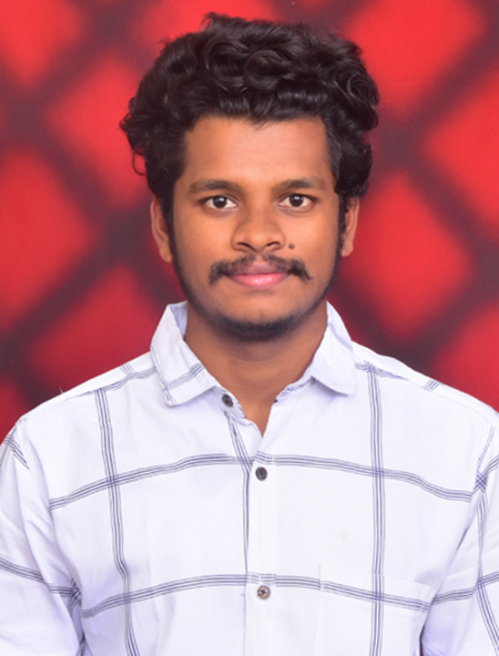

Veerabhadram Rudrarapu

Summary
I am a hardworking and dedicated individual with strong programming skills , looking for an best organization to showcase my skills
Education
- Bachelor of Technology, Computer science and Engineering - Krishna University (2020-2023) - 7.8 CGPA
- Technical Diploma, Computer science and Engineering - Andhra Polytechnic (2016-2020) - 66%
- Secondary School Eduaction, VVS Public School (2015-2016) - 8.8 CGPA
Internships
Data Analytics and Visualization - Accenture.
June 2024
- Participated in a job simulation program focusing on data analytics and visualization.
- Gained hands-on experience with data analysis, data modelling, data understanding, and data visualization.
- Developed skills in Microsoft Office and presentation tools to communicate findings effectively.
Flutter -Krify Software Technologies Pvt Ltd.
Mar 2023 - May 2023
- Worked on developing mobile applications using Flutter.
- Enhanced skills in Dart and contributed to team projects with effective communication and teamwork
Web Technologies Intern -Krify Software Technologies Pvt Ltd.
May 2018 - Nov 2018
- Focused on web development technologies, including HTML, CSS,JavaScript, and React.js.
- Engaged in project planning, strategy formulation, and public speaking to present project outcomes.
Skills
- C
- Java
- Python
- Dart
- HTML
- CSS
- JavaScript
- React
- Ms Office
Certifications
- Python For DataScience - IBM
- Java - Great Learning Academy
- Python - APSSDC
- Front-End - Krify
- Flutter-Krify
Languages
- Telugu - Native
- English - Proficient
Contact Me